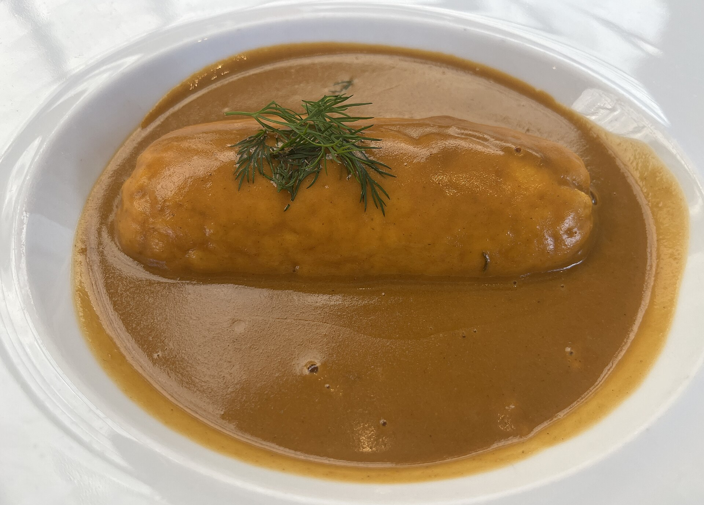
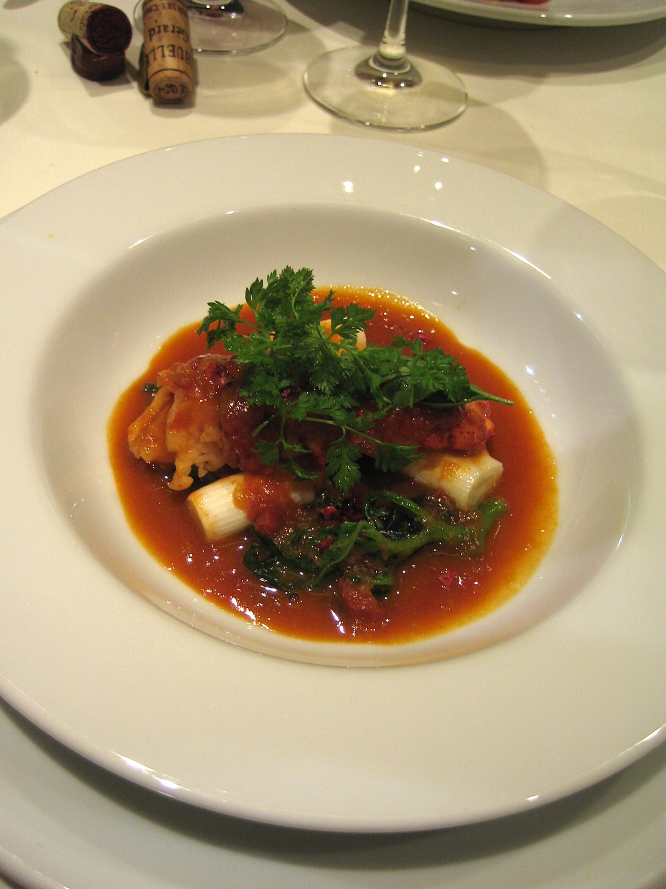
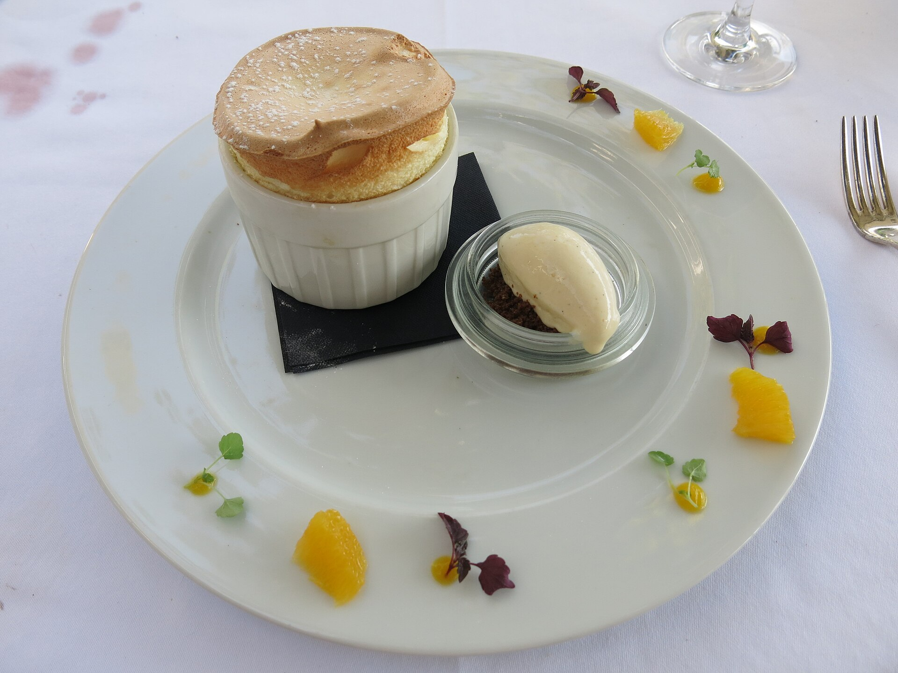
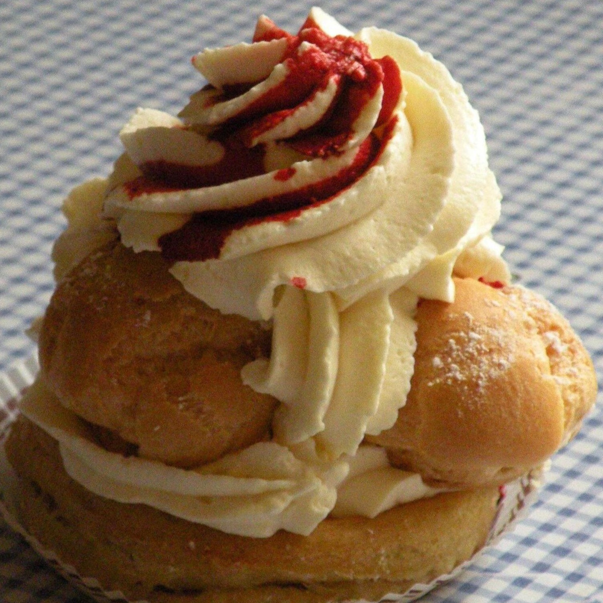
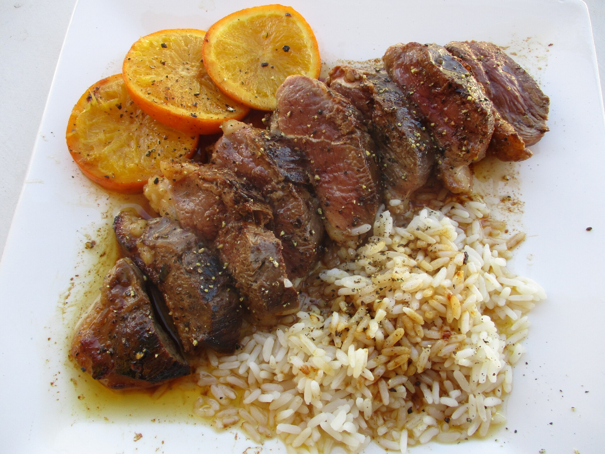
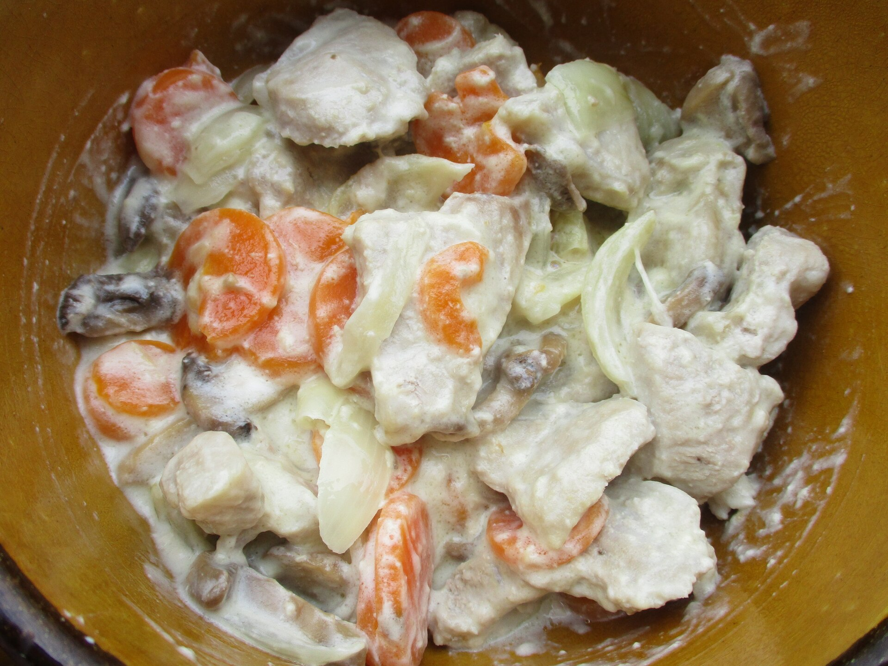
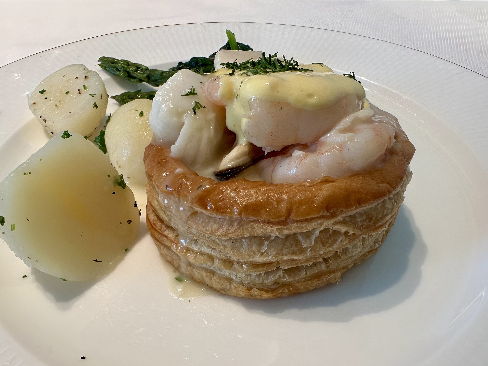

Pâtisserie et terrine
Pâté en croûte de gibier, sauce Cumberland
Pâte montée à la main, farce qu'il faut assaisonner à l'aveugle, et une gelée qui doit prendre — sinon tout est perdu.
Le répertoire
Le calendrier n'affiche que les prochaines séances. Voici la liste complète : trente ans de technique française classique, dans laquelle chaque atelier vient puiser. Demandez n'importe lequel de ces plats en écrivant.
Pâtisserie et terrine
Pâte montée à la main, farce qu'il faut assaisonner à l'aveugle, et une gelée qui doit prendre — sinon tout est perdu.

Poisson de rivière
Une panade travaillée à la main jusqu'à ce qu'elle retienne l'air, puis un beurre d'écrevisses qui tranche si l'on va trop vite.

Crustacé
Le homard est la partie facile. La sauce, montée sur ses propres carcasses et réduite deux fois, est la vraie leçon.

Dessert
Six minutes du four à la table, sans exception. On chronomètre pour que personne ne soit encore au dressage.

Pâtisserie
Pâte feuilletée, pâte à choux, caramel et crème Chiboust dans un seul dessert — celui qui sanctionne tout raccourci pris plus tôt dans la journée.

Volaille
Une sauce bigarade montée à l'ancienne — caramel, vinaigre, orange — et une volaille cuite pour que la peau reste digne d'être mangée.

Viande
Le plat que tout le monde croit connaître. Fait correctement, avec une liaison au jaune d'œuf et à la crème que la plupart des recettes ont abandonnée.

Pâtisserie et abats
Une pâte feuilletée qui doit lever droite, garnie de ris de veau, de crêtes et de quenelles — un plat que peu de cuisines tentent encore dans sa forme complète.

Dessert
Un caramel poussé plus loin que ce qui semble prudent, et un démoulage qui tient ou qui ne tient pas — impossible de rattraper après coup.
Cette liste change avec la saison. Si un plat que vous souhaitez n'y figure pas, écrivez pour demander — il n'est peut-être simplement pas encore consigné.